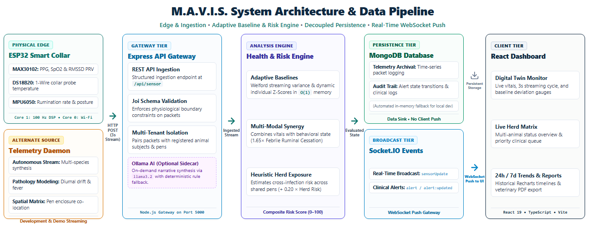
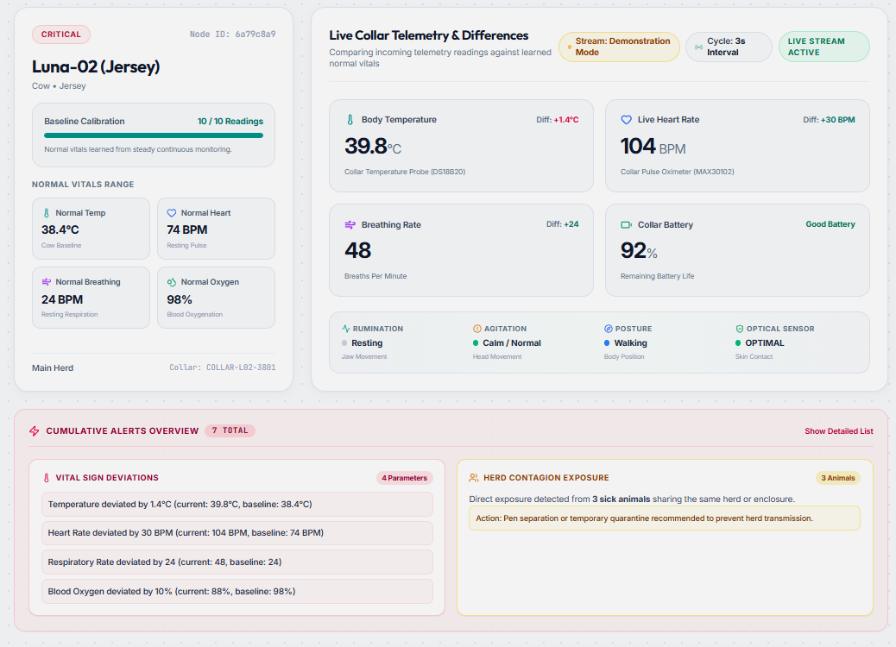

01
Problem Statement & Objectives
Conventional animal health monitoring relies on manual and fragmented methods:
Infrequent Manual Checks: Visual inspections fail to catch rapid physiological changes between checks.
Flawed Static Thresholds: Generic limits cause false alarms and miss subtle individual anomalies.
Unnoticed Contagion & Cloud Dependency: Isolated monitoring misses herd outbreaks, while remote farms lack reliable internet.
Engineering Need: A low-cost, local-first IoT system delivering continuous, personalized, and real-time vitality monitoring.
Project Objectives
1
Wearable IoT Collar & Ingestion: ESP32 collar integrating MAX30102, DS18B20, and MPU6050 for continuous vitals capture with 3-second JSON streaming.
2
Adaptive Baseline & Circadian Rules: Maintain personalized baseline profiles via rolling EMA (α = 0.05) and multi-modal risk normalization.
3
Herd Contagion & Alert Engine: Correlate simultaneous febrile spikes across co-located animals to flag contagion with automated alert lifecycle management.
4
Interactive Digital Twin Dashboard: Deliver real-time web telemetry streaming, digital twin visualization, 24h historical trends, and exportable audit reports.
02
Collar Hardware & Sensor Subsystem
Embedded Hardware Schematic (ESP32 Xtensa Dual-Core)
100 Hz sensor task (nominal 10 ms loop)
DS18B20 Surface Temp (GPIO 4): Non-blocking 1-Wire interface with background conversion; ±0.5°C rated.
MAX30102 Optical PPG (I²C 21/22): Dual Red/IR absorption yields pulse HR, uncalibrated optical SpO₂, and PRV RMSSD.
MPU6050 6-Axis IMU (I²C 21/22): Tri-axial accelerometer & gyro tracks activity (|a| > 12 m/s²), head-shaking, and rest.
RUMINATION Chew Cadence (Gyro-Z): Zero-crossing oscillation frequency (30–80 CPM) flags rumination cessation.
10-SAMPLE MOVING AVERAGE
10-sample moving average smooths short-term fluctuations in sensor readings in constant time without heap fragmentation.
MOTION ARTIFACT GATING
Discards optical pulse calculations during vigorous movement (|a| > 15 m/s²), suppressing motion-induced pulse spikes.
I²C BUS AUTO-RECOVERY
Bit-bangs a 9-clock SCL recovery pulse train to release an SDA-low bus hang without resetting the microcontroller.
03
System Architecture & Telemetry Pipeline

04
Adaptive Baseline Response to an Anomalous Reading
Adaptive Baseline Response to an Anomalous Reading
Illustrative example — not recorded livestock data
z =
|Xt − Bt|
max(σWelford, σmin)
SCREENING CRITERION: z ≥ 2.5 (Configured Statistical Cutoff)
1. Baseline Initialization (N = 10): First 10 valid ingested readings compute initial arithmetic mean: B0 = (∑ X) / 10. Assumes initial resting state.
2. Adaptive EMA Drift (α = 0.05): Bt = 0.05·Xt + 0.95·Bt−1 tracks gradual drift when readings pass screening checks.
3. Welford's Single-Pass (M2): Iterative single-pass variance estimator calculates standard deviation σ = √(M2 / (n−1)) in O(1) memory.
4. Baseline Contamination Guard: If z ≥ 2.5 or absolute limits fail, alert fires and baseline updates are skipped to protect reference integrity.
Heuristic Risk-Score Multipliers (calculateRiskScore.js — Not Diagnostic Probabilities):
Fever + Rumination Cessation
1.65× Multiplier
Fever + Low Motion / Recumbency
1.50× Multiplier
Critical Heart Rate + Critical Low Oxygen
1.40× Multiplier
Fever + Critical Heart Rate
1.35× Multiplier
Critical Heart Rate + Head Shaking
1.30× Multiplier
Critical Heart Rate at Rest, Without Fever
1.25× Multiplier
NRC Heat Stress Index (THI): THI = (1.8·T + 32) − (0.55 − 0.0055·RH)·(1.8·T − 26) — Requires external barn RH data; collar lacks onboard humidity sensor.
Spatial Herd Contagion Risk: Risk_herd(i) = ∑ NeighborRisk_j · W_spec · W_zone — Proximity factor: shared pen (0.90) vs. quarantine (0.05).
05
Real-Time Digital Twin Dashboard

Deterministic Triage & Inspection Rules (createEvaluator.js):
Screening Rules (Not Clinical Diagnoses)
Febrile Rumen Cessation: Elevated temp + low chew count → Priority inspection of udder, rumen motility & milk yield.
Febrile Prolonged Inactivity: Elevated temp + continuous rest → Evaluate hydration, stall shade & vital signs.
Cardiorespiratory Strain: Tachycardia + SpO2 proxy < 90% → Perform thoracic check; verify barn airflow.
Persistent Agitation: High angular velocity + elevated HR → Inspect ear canal and skin for parasite irritation.
06
Verification Status, Benchmarks & Scope
| Evaluation Focus | Implementation / Target | Observed / Tested Status | Evidence Level |
|---|---|---|---|
| Decision Engine Latency | calculateRiskScore.js local rules | Source includes a local timing assertion; not end-to-end latency. | LOCAL TIMING ASSERTION (<5ms) |
| Edge Telemetry Cadence | ESP32 FreeRTOS 100Hz DSP; ~3s POST | Firmware scheduler & queue implemented | PROTOTYPE IMPLEMENTED |
| Baseline Adaptation | Welford M2 variance & EMA (α = 0.05) | Implemented in source; focused test required. | IMPLEMENTED IN SOURCE |
| Outlier Isolation Guard | Readings with z ≥ 2.5 skip baseline updates | Implemented in source; focused test required. | IMPLEMENTED IN SOURCE |
| Livestock Field Efficacy | Real-world false-alarm rejection & screening | Pending livestock field validation. | PENDING FIELD VALIDATION |
< 5 ms
Local Unit Timing
3.0 s
Ingestion Interval
N = 10
Baseline Window
z = 2.5
Screening Cutoff
Prototype Engineering Summary:
The MAVIS prototype integrates multi-modal edge sensing with FreeRTOS DSP and dynamic statistical baselines, designed to screen physiological deviations while filtering transient motion spikes. While local unit timing assertions validate core decision speed, comprehensive livestock field validation across operational farm conditions remains to be conducted.
Limitations & Future Scope:
• Livestock field trials to quantify sensitivity & false-alarm rates.
• Collar probe temp cross-calibration against internal core vitals.
• Transition from Wi-Fi to Sub-GHz LoRaWAN mesh for kilometer-range pasture coverage.
Open-Source Repository:
github.com/Dheemanth07/M.A.V.I.S
github.com/Dheemanth07/M.A.V.I.S